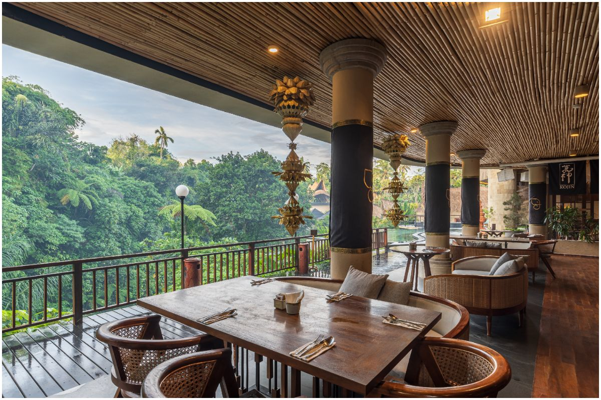
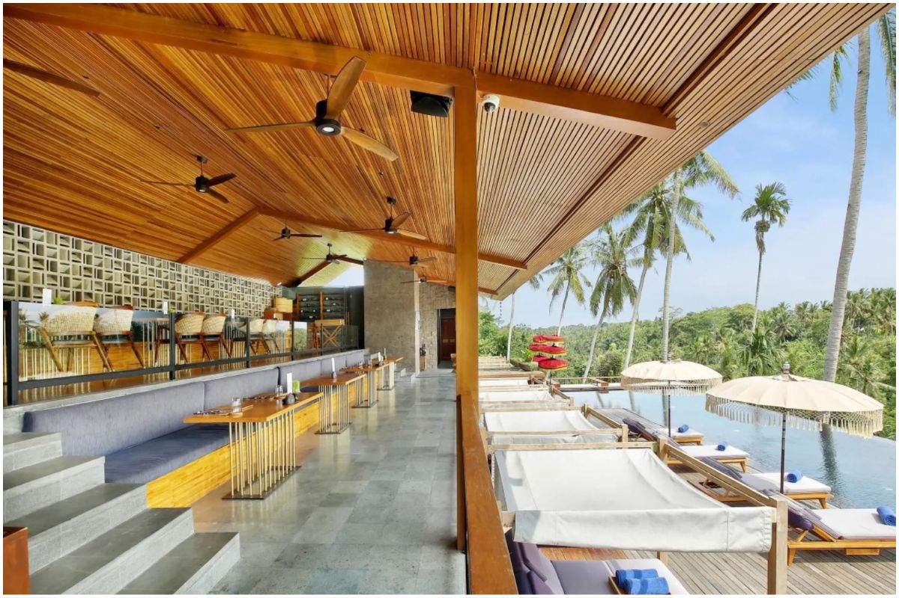
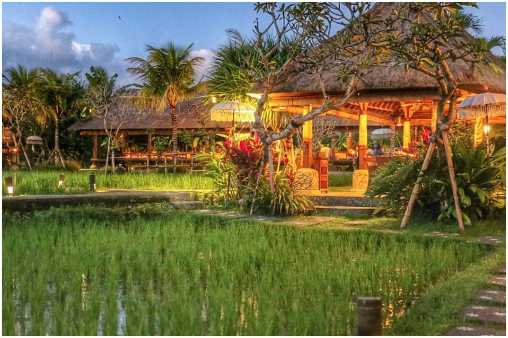
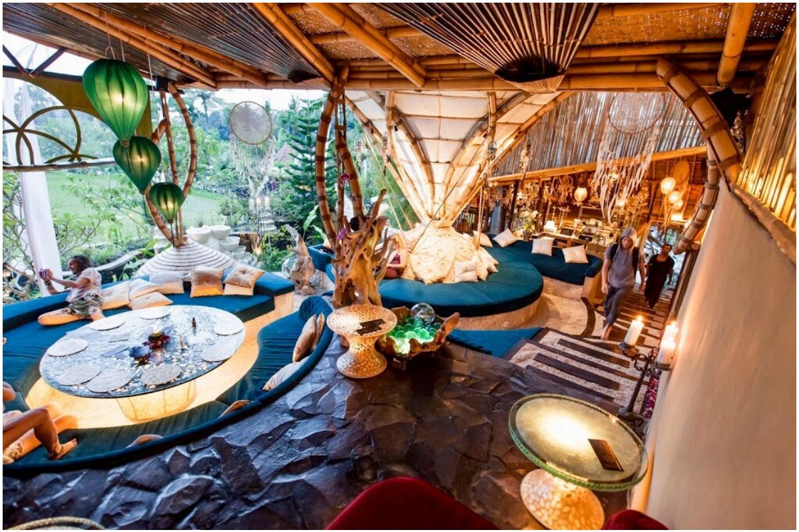
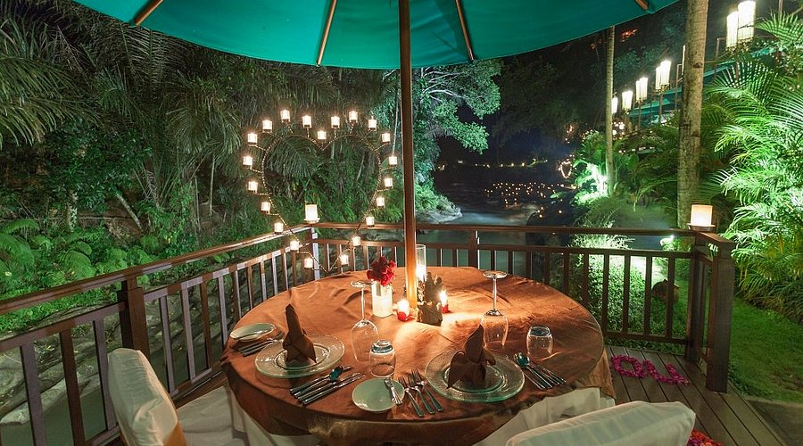
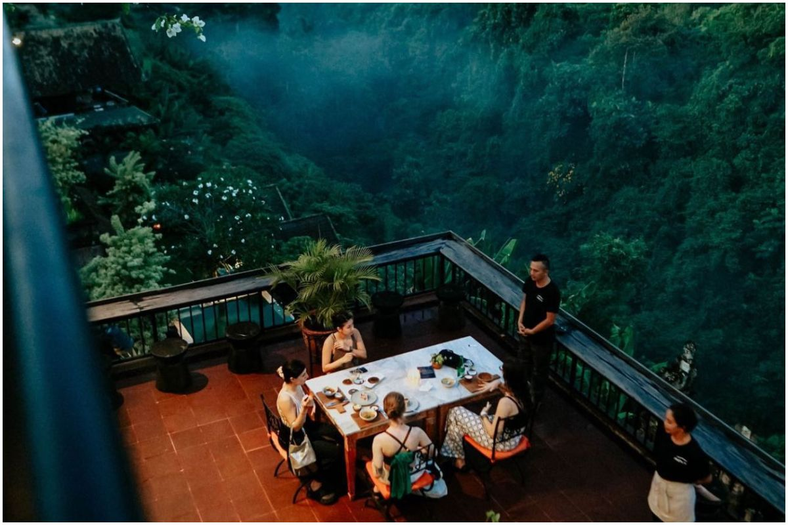
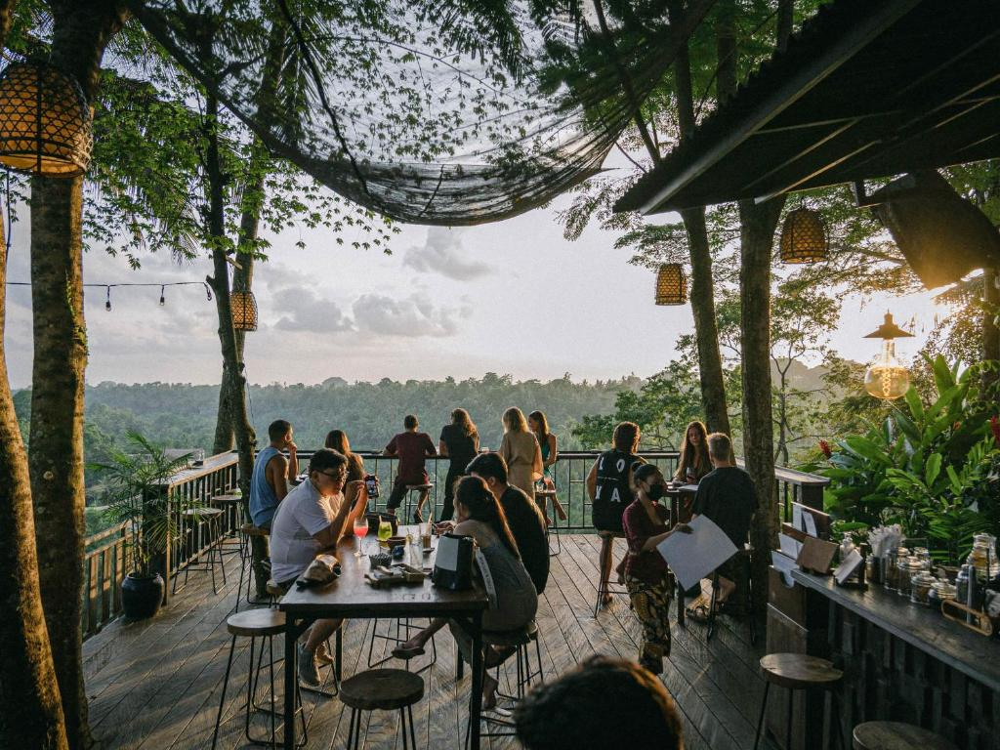
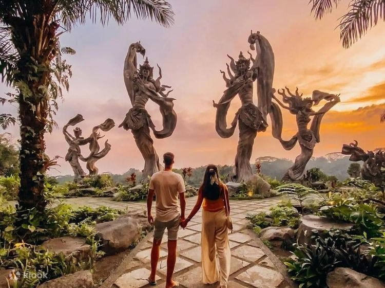
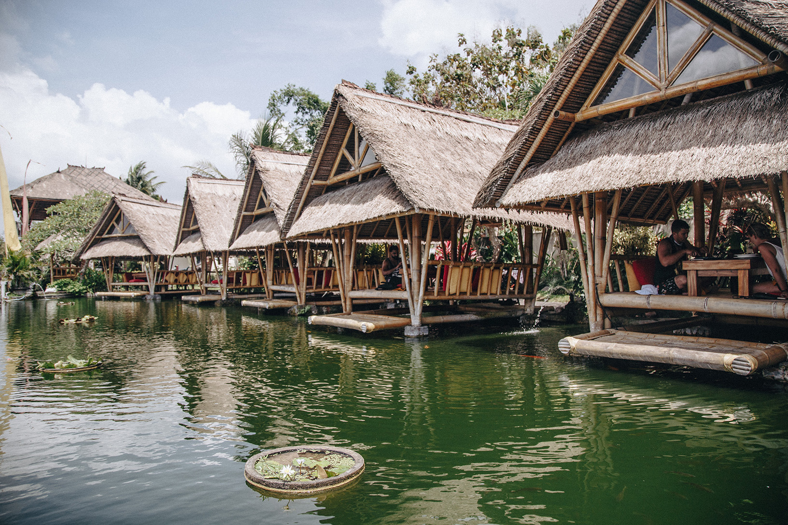

Kuliner Ubud
Temukan pengalaman bersantap terbaik dengan pemandangan memukau dan cita rasa autentik Bali
Tempat Makan Terbaik di Ubud
Dari restoran dengan view sawah hingga fine dining di tepi sungai, nikmati pengalaman kuliner tak terlupakan

Ankhusa Bali
Kalau kamu lagi cari tempat makan di Ubud view bagus, Ankhusa bisa jadi pilihan yang pas banget. Restoran ini terkenal karena menyajikan pengalaman makan yang nggak cuma enak, tapi juga penuh suasana. Bayangin makan sambil lihat hutan tropis dan aliran sungai yang tenang, adem dan bikin rileks. Desain tempatnya khas Bali, dengan sentuhan bambu dan kayu yang hangat. Untuk makanannya, mereka punya banyak pilihan mulai dari Thai Chicken Green Curry, Beef Stroganoff, sampai Babi Panggang Karo.

Habitat Bistro
Rekomendasi pertama buat kamu yang cari tempat makan di Ubud yang Instagramable adalah Habitat Bistro. Lokasinya ada di jantung Ubud, tepatnya di Jalan Monkey Forest No. 88. Tempat ini cocok banget buat makan siang santai atau makan malam romantis, apalagi dengan interior hangat dan pemandangan langsung ke hutan tropis. Habitat Bistro menyajikan menu lezat perpaduan Italia dan Prancis yang bikin lidah puas. Serunya lagi, mereka sering mengadakan event seru seperti pesta musik era 90-an dengan DJ.

Bebek Tepi Sawah
Bebek Tepi Sawah adalah salah satu restoran di Ubud yang ikonik. Tempat makan ini dikenal dengan suasana pedesaan Bali yang autentik dan tentu saja menu andalannya, bebek goreng yang super renyah. Lokasinya ada di Jalan Raya Goa Gajah, dikelilingi oleh hamparan sawah hijau yang bikin makan jadi lebih santai dan segar. Restorannya dibangun dengan paviliun tradisional beratap alang-alang alias bale bengong. Menu andalan adalah Bebek Goreng Tepi Sawah yang disajikan dengan tiga sambal khas Bali dan sayuran lokal.

Akasha Restaurant
Kalau kamu lagi cari tempat makan di Ubud yang hits sekaligus Instagramable, coba deh mampir ke Akasha Restaurant Ubud. Lokasinya ada di Tegalalang, yang menghadap langsung dengan sawah dan hutan tropis. Suasananya yang adem dan tenang, bisa jadi pilihan worth-it untuk liburanmu. Menu Akasha restaurant juga nggak kalah menarik, karena mereka fokus ke makanan sehat dan berkelanjutan. Semua makanannya bebas gluten, kedelai, jagung, kacang-kacangan tertentu, dan bahan tambahan yang nggak sehat. Pilihannya cocok buat vegan, raw food, keto, maupun omnivora.

Swept Away at Samaya Ubud
Kalau kamu lagi cari tempat makan di Ubud dengan view bagus, Swept Away di The Samaya Ubud bisa jadi pilihan yang pas. Restoran ini langsung menghadap ke Sungai Ayung, dengan suasana tenang dan suara gemericik air yang bikin makan siang atau malam jadi makin santai. Menu yang ditawarkan perpaduan antara masakan lokal dan internasional, cocok banget buat kamu yang pengin makanan ringan dan segar seperti salad atau sandwich.

Indus Restaurant
Indus Restaurant adalah salah satu restoran di Ubud dengan pemandangan indah. Restoran ini punya dua lantai dengan area makan luas, lengkap dengan pilar ukiran tangan, lantai teraso, dan furnitur kayu jati yang bikin suasananya elegan tapi tetap nyaman. Menu di sini memadukan rasa otentik Bali dengan sentuhan Asia modern. Beberapa yang wajib coba seperti Salted Squid Salad, Warm Tofu Salad, dan Shrimp Curry. Pilihan minumannya juga lengkap, dari koktail khas sampai jus segar. Lokasinya cuma sekitar 5 menit dari pusat Ubud.

The Sayan House
Satu lagi tempat makan di Ubud yang tidak boleh kamu lewatkan adalah The Sayan House. Restoran fine dining ini berada di tepi Sungai Ayung yang dikelilingi taman tropis. Kamu pasti terbayang dengan suasananya tenang dan adem. Desainnya elegan dengan perpaduan gaya kolonial dan sentuhan modern Jepang, jadi terasa mewah tapi tetap homey. Menu di sini unik banget, menggabungkan cita rasa Jepang dan Amerika Latin. Beberapa yang jadi favorit ada Foie Gras Nigiri, Yuki's Ribs, dan King Prawn Jambalaya.

Taman Dedari
Salah satu tempat makan di Ubud yang Instagramable adalah Taman Dedari. Tempat ini nggak cuma restoran, tapi juga taman cantik dengan patung dewi. Resto ini berada di tepi lembah Sungai Ayung dan dikelilingi hutan tropis dan aliran sungai. Dari sini sudah terbayang bagaimana suasananya yang adem dan bikin rileks. Menu andalannya Taman Dedari ada Bebek Goreng Krispi, Sate Ayam, dan Sate Lilit, lengkap dengan pilihan minuman tradisional dan modern. Lokasinya juga dekat dari pusat Ubud, hanya sekitar 10–15 menit.

Bebek Tebasari Resto
Kalau kamu mau coba tempat makan di Ubud view sawah selain Bebek Tepi Sawah, Bebek Tebasari Resto bisa jadi alternatif yang pas. Restoran ini dikelilingi sawah hijau dan punya gazebo terapung yang bikin suasananya sejuk dan romantis. Menu utamanya tentu saja Bebek Tebasari, bebek goreng renyah yang disajikan dengan sambal matah dan urab. Kalau lebih suka yang berkuah atau empuk, ada juga Bebek Betutu yang dimasak dengan bumbu tradisional khas Bali. Mereka juga menyediakan pilihan menu set seperti Silver Set Menu.